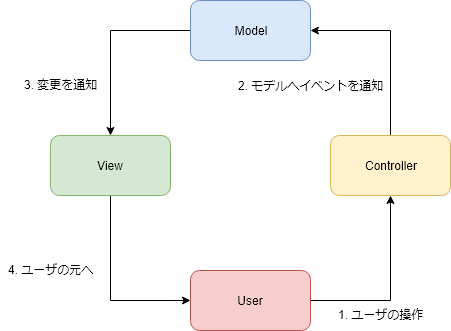
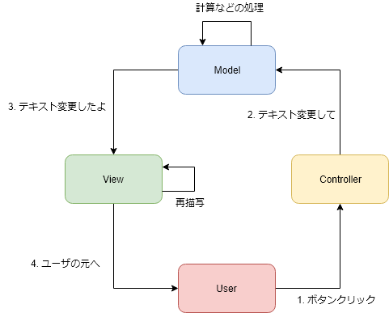
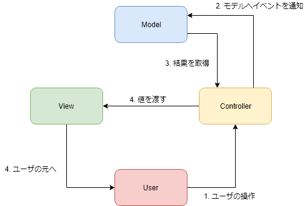
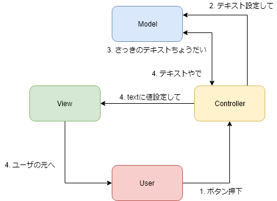

MVC Model 2
ここではオブジェクト指向について要点を簡単に解説する。
詳しい内容についてはソフトウェア工学IIやプログラミング言語の授業を受講することを推奨する。
詳しい内容についてはソフトウェア工学IIやプログラミング言語の授業を受講することを推奨する。
導入
GUIプログラミングのみならず、ウェブサイトのプログラミングを行う場合も画面表示と内部処理が複雑に絡み合ういわゆるスパゲッティプログラムになりがちだ。そこで考えられたのがMVCパターンだ。
MVCパターンでは画面表示と内部処理を分割し、それぞれを独立して管理できるようになっている。しかしながら、MVCが活きるのは同一のコンピュータ上（メモリが共有できる環境）に限った話で、ウェブシステムではネットワークを介するため画面と内部処理を維持することが難しい。そこで考えられたのがMVC Model 2パターン(以下MVC2)である。
MVCパターンでは画面表示と内部処理を分割し、それぞれを独立して管理できるようになっている。しかしながら、MVCが活きるのは同一のコンピュータ上（メモリが共有できる環境）に限った話で、ウェブシステムではネットワークを介するため画面と内部処理を維持することが難しい。そこで考えられたのがMVC Model 2パターン(以下MVC2)である。
MVC
MVC2の話に入る前に元来のMVCについて簡単におさらいしておこう。
MVCはModel-View-Controllerの略称で、それぞれが独立したモジュールとして表現される。
まずはModelだが、Modelではビジネスロジック（計算などの内部処理）を主に記述し、値の保持もModelが担う。MViewは名前の通り、描写関連の処理を主に記述する。具体的な話になると言語などによって異なるが、画面を構成する要素（例えばテキストボックス）をどのように描写するかなどを記述することとなる。そしてControllerではユーザからの操作（これをイベント言う）を受け付け、それを適切にモデルへ伝える役割を担う。
そのためにはインタフェース（言語機能ではなく、メソッドの引数と戻り値のこと）を正しく設計する必要があるのだが、ここではそこまで深くは追求しない。
そんなMVCだが、画面の実の値はどこにあるのだろうか。
...
実は画面の値はViewではなく、Modelが保持する。ではどうやってViewは値を知るのだろうか。Modelを直に保持してしまえば疎結合は失われてしまう。そこで用いられるのがオブサーバパターンといい、ModelはViewに対して値を更新したことを通知し、それを受けてViewは自身の値を更新する。
ソースコードの開閉
ちょっと長くなってしまったが、JavaでMVCパターンを簡単に実装するとこのような形となる。Controllerにてイベントを受け、それをModelへ伝える。そしてModelでは何らかの処理を行い、Viewへと通知する。あとはViewにてうまく値を処理して再描写すれば一連の流れは終了だ。
しかしながら、MVCは同一のコンピュータあるいはメモリ共有ができる環境での話で、ウェブシステムではネットワーク越しに処理を行うため、Modelの維持が現実的ではない。そこで編み出されたのがMVC Model 2である。
MVCはModel-View-Controllerの略称で、それぞれが独立したモジュールとして表現される。
まずはModelだが、Modelではビジネスロジック（計算などの内部処理）を主に記述し、値の保持もModelが担う。MViewは名前の通り、描写関連の処理を主に記述する。具体的な話になると言語などによって異なるが、画面を構成する要素（例えばテキストボックス）をどのように描写するかなどを記述することとなる。そしてControllerではユーザからの操作（これをイベント言う）を受け付け、それを適切にモデルへ伝える役割を担う。

そして何よりも重要なのがそれぞれのモジュールは独立したものでなければならない。これを疎結合とも言うのだが、モジュールは取っ替え引っ替えできることが望ましい。例えば、Viewを別のものに置き換えてもModelやControllerの修正なくして正しく動作するのが理想だ。これはMVCなどのデザインパターンが生まれた所為でもあるのだが、モジュール同士が密に結合している状態では片方を修正すると他のモジュールも道連れで動作が大きく異なることがあり、バグのもとになりかねないため可能な限り避けたい。そこで、結合を疎にすることで一つのモジュールを書き換えてもその他に影響がでないようにする。これがMVC、ひいてはデザインパターンのゴールである。そのためにはインタフェース（言語機能ではなく、メソッドの引数と戻り値のこと）を正しく設計する必要があるのだが、ここではそこまで深くは追求しない。
そんなMVCだが、画面の実の値はどこにあるのだろうか。
...
実は画面の値はViewではなく、Modelが保持する。ではどうやってViewは値を知るのだろうか。Modelを直に保持してしまえば疎結合は失われてしまう。そこで用いられるのがオブサーバパターンといい、ModelはViewに対して値を更新したことを通知し、それを受けてViewは自身の値を更新する。
ソースコードの開閉
Main.java
public class Main {
public static void main(String[] args) {
Controller controller = new Controller();
View view = new View(controller);
Model model = new Model(view);
controller.setModel(model);
view.show();
}
}
Oveservable.java
public interface Oveservable {
void update(String name, String value);
}
Model.java
public class Model {
private Oveservable oveservable;
private String text;
public Model(Oveservable oveservable) {
this.oveservable = oveservable;
}
/**
* テキストを変更します。
*/
public void changeText() {
setText(String.format("Changed by %s\n", this.hashCode()));
}
/**
* Modelの内部値であるtextを変更します。
* @param text 変更する値
*/
private void setText(String text) {
this.text = text;
this.oveservable.update("label", this.text);
}
}
View.java
import javax.swing.JFrame;
import javax.swing.JPanel;
import javax.swing.JLabel;
import javax.swing.JButton;
import javax.swing.JComponent;
import java.util.HashMap;
import java.util.Map;
public class View implements Oveservable {
private JFrame frame;
private JLabel label;
private Map<String, JComponent> componentMap;
public View(Controller controller) {
initialize(controller);
}
/**
* 画面を初期化します。
* @param controller コントローラのインスタンス
*/
public void initialize(Controller controller) {
componentMap = new HashMap<>();
frame = new JFrame("MVC Test");
frame.setDefaultCloseOperation(JFrame.EXIT_ON_CLOSE);
frame.setSize(300, 300);
frame.setLocationRelativeTo(null);
JPanel panel = new JPanel();
label = new JLabel();
JButton button = new JButton("ボタン");
button.addActionListener(controller::actionPerformed);
panel.add(label);
panel.add(button);
frame.add(panel);
componentMap.put("label", label);
}
/**
* 画面を表示します。
*/
public void show() {
frame.setVisible(true);
}
/**
* 画面を更新します。
*/
@Override
public void update(String name, String value) {
if (componentMap.containsKey(name)) {
JComponent comp = componentMap.get(name);
if (comp instanceof JLabel)
((JLabel) comp).setText(value);
}
}
}
Controller.java
import java.awt.event.ActionEvent;
public class Controller {
private Model model;
public void setModel(Model model) {
this.model = model;
}
/**
* クリックイベントの処理メソッド
* @param event イベントのインスタンス
*/
public void actionPerformed(ActionEvent event) {
model.changeText();
}
}
ちょっと長くなってしまったが、JavaでMVCパターンを簡単に実装するとこのような形となる。Controllerにてイベントを受け、それをModelへ伝える。そしてModelでは何らかの処理を行い、Viewへと通知する。あとはViewにてうまく値を処理して再描写すれば一連の流れは終了だ。

このコード自体実用性はさほどないが、このようにしてMVCは実装することができる。しかしながら、MVCは同一のコンピュータあるいはメモリ共有ができる環境での話で、ウェブシステムではネットワーク越しに処理を行うため、Modelの維持が現実的ではない。そこで編み出されたのがMVC Model 2である。
MVC Model 2
次にMVC2だが、こちらは従来のMVCからオブサーバパターンを取っ払い、コントローラがビューへの通知を担う形となる。
ソースコードの開閉
この例はただ単にユーザが入力したテキストをモデルに渡し、加工して表示するだけのプログラムだが、図にすると以下のようになる。

具体的な実装は様々な方法があるが、簡単な例をここに示しておく。ソースコードの開閉
index.php
<?php
require_once(dirname(__FILE__) . '/Controller.php');
require_once(dirname(__FILE__) . '/View.php');
require_once(dirname(__FILE__) . '/Model.php');
$view = new View();
$model = new Model();
$controller = new Controller($view, $model);
$controller->load();
template.php
<!DOCTYPE html>
<html lang="en">
<head>
<meta charset="UTF-8">
<title>MVC2 Test</title>
</head>
<body>
<div><?php echo $this->param['text']; ?></div>
<form action="index.php" method="post">
<input type="text" id="text_box" name="text_box" />
<input type="submit" id="button" name="button" />
</form>
</body>
</html>
Model.php
<?php
class Model {
private $text = '';
/**
* テキストを加工し、設定します。
* @param $text
*/
public function setText($text) {
$this->text = "Text is \"" . $text . "\" modified by Model.\n";
}
/**
* 設定されたテキストを返します。
* @return string
*/
public function getText() {
return $this->text;
}
}
View.php
<?php
class View {
private $param = array();
/**
* テンプレートに描写する値を設定します。
* @param $key
* @param $value
*/
public function assign($key, $value) {
$this->param[$key] = $value;
}
/**
* テンプレートを表示します。
*/
public function show() {
include_once(dirname(__FILE__) . '/template.php');
}
}
Controller.php
<?php
class Controller {
/**
* @var View $view
*/
private $view;
/**
* @var Model $model
*/
private $model;
public function __construct($view, $model) {
$this->view = $view;
$this->model = $model;
}
/**
* 初期化処理
*/
private function init() {
$this->view->assign('text', $this->model->getText());
}
/**
* 読み込み処理を開始します。
*/
public function load() {
if (isset($_POST['button']) && isset($_POST['text_box'])) {
$this->model->setText($_POST['text_box']);
}
$this->init();
$this->view->show();
}
}
この例はただ単にユーザが入力したテキストをモデルに渡し、加工して表示するだけのプログラムだが、図にすると以下のようになる。

もう既におわかりだと思うが、Controllerがオブサーバの代わりを担っており、ModelのインスタンスやViewのインスタンスが常に保持されなくてもイベントに応じて生成し、コントローラにて状況を制御するため、ネットワーク越しでもうまく動作させることができる。